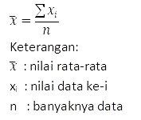
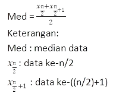

Statistika
Statistika adalah ilmu pengetahuan yang berkaitan dengan cara-cara pengumpulan data, pengolahan serta analisisnya, penarikan kesimpulan,
hingga pembuatan keputusan yang cukup beralasan berdasarkan fakta.
Rumus Data Tunggal
- Mean
- Median
- Modus
- Kuartil
- Desil & Persentil
- Ragam


Untuk menentukan modus, biasanya pada data tunggal dibuat tabel frekuensi data tunggal agar
memudahkan dalam menentukan frekuensi tiap data, lalu temukan data dengan frekuensi terbesar.


Rumus desil sama dengan persentil, tapi 100 diubah menjadi 10

Rumus Data Kelompok
- Mean
- Median
- Modus
- Kuartil


Iklan

Dibuat oleh Mikael Ernest Susanto IT3_24